STEPS：自触发式端到端 Agent 推送推荐系统
- 英文题目： A Self-Triggered Agentic Push Recommendation System
- 作者： Zhao-Yu Zhang、Qingying Chen、Chunyuan Zheng、Jing Zhou、Jian Sun、Siqi Chen、Leiying Chen、Chuan Zhou、Huiyou Jiang、Xin Tao、Haoxuan Li、Zhouchen Lin
- 一作主机构： ByteDance；合作机构为 Peking University
- 来源： RecSys 2026 / arXiv v1，论文入口
- 公开日期： 2026-08-03
- 代码与项目状态： 本轮未核验到官方公开代码仓库；论文 DOI 为 10.1145/3773078.3831932
1. 背景和问题
推送推荐与站内信息流最大的差别，是系统不能等用户主动打开应用后再排序。它要在用户不在场时主动创造一次触达机会，因此一个策略至少要同时回答两个问题：当前时刻要不要发，以及如果现在不发，系统下一次应在什么时候重新判断。前者是二元执行动作，后者是连续时间规划；两者又共同受内容价值、用户近期轨迹、长期活跃、通知疲劳和计算预算约束。论文把正向目标写成 User Active Days（UAD），把用户撤销通知权限的人数作为 Negative Experience（NE）的代理量。这两个目标不能被简单合并为“多发就活跃”或“少发就安全”：过早、过密会伤害用户，过迟、过疏又会失去时效性。
推送推荐必须在资源受限的连续时间轴上同时回答“现在要不要发”和“下一次何时再判断”。离线预排无法及时吸收用户轨迹，固定间隔轮询则被迫在错过时机与浪费算力之间二选一。
论文将既有工业方案归成两类。第一类是 pre-planned frequency：目标日开始前，用 uplift 模型估计不同频次与时刻的增量价值，再用整数规划在全局预算下给每个用户分配计划。这条链路稳定、可控，却把真正执行时才出现的信号——例如用户刚刚自然活跃、关注作者突然开播、候选内容质量变化——排除在计划之外。第二类是 fixed-interval triggering：每隔固定分钟重新唤醒系统，利用实时状态判断是否推送。间隔短能够更接近最佳时机，但每次唤醒都可能触发召回、预排序、排序和价值估计；间隔长虽省算力，却又退化成粗粒度计划。更麻烦的是，多阶段系统常分别优化“生成机会”“判断发送”“控制预算”，局部最优不保证最终推送对长期价值最优。
STEPS 的切入点不是给固定轮询再调一个间隔，而是把“下一次调用时间”本身变成 agent 的动作。系统每次被唤醒后，由执行 agent 判断当前是否发送，同时由规划 agent生成下一次唤醒间隔；轻量过滤 agent 在昂贵的 item 排序之前拦截低价值请求和异常短间隔。这样，调用时间、发送动作和资源守门共同形成闭环。论文声称该系统已在抖音超过十亿用户的推送平台完整部署，因此它的价值不仅是一个新的序列模型，还在于给出如何把生成式强化学习目标嵌入高 QPS、多护栏、强成本约束的工业推荐链路。
问题设定仍需保持审慎。UAD 是长期再参与的业务代理，而不是用户福利的完整定义；撤销通知权限虽能捕捉严重疲劳，却无法覆盖静默忽略、情绪干扰或系统级关闭之前的轻度反感。论文报告的是单一平台的相对变化，也没有公开绝对基线、置信区间和流量分桶细节。因此，这篇工作最可信的阅读方式，是把它看作一套已经线上验证的“何时计算、何时行动”的系统设计，而不是把某个相对百分比直接外推到其他产品。
从研究脉络看，STEPS 也不是把通用大模型式 agent 原封不动搬进推荐。它沿用 Decision Transformer 把强化学习改写为条件序列建模，但动作空间被拆成“连续时间规划”和“二元发送执行”，再用生产护栏处理生成策略无法独立保证的安全边界。这个拆分比统一大策略更贴合推送场景：上游规划只需用户和环境状态，真正涉及候选内容的昂贵判断延迟到少量高价值时刻；长期回报则跨越三个阶段回传，使规划不只学会生成看似合理的时间，还要生成能通过下游并获得响应的时间。因而，论文实际回答了三个相互约束的问题：怎样让低维目标回报不被高维状态忽略，怎样从次优日志中学习比历史动作更好的执行价值，以及怎样在不牺牲大部分业务增益的前提下把重排序调用量压到可部署范围。后续方法与实验也分别围绕这三个问题展开。
2. 方法
2.1 自触发闭环与端到端目标
论文首先把一天内的推送过程写成不定长轨迹。设第 (t) 次系统唤醒时观察到用户与环境状态 (s_t)，正向回报为 (r_t^+)，负向回报为 (r_t^-)，则带权 return-to-go 如下。这里的轨迹步不是固定钟表刻度，而是由模型历次生成的唤醒事件构成，所以不同用户一天内可以拥有不同的决策长度。
(\lambda_n) 控制业务收益与负体验之间的折中，(T) 不再是预先固定的全日时间格数，而由系统自己生成的唤醒序列决定。符号解释： (R_t) 是从当前事件到轨迹末端的目标回报，(a_t) 是当前二元发送动作，(\Delta t) 是下一次唤醒间隔，(\pi_A) 与 (\pi_P) 分别表示执行和规划策略。每次唤醒联合输出
其中 (a_tin{0,1}) 决定当前是否发送，(Delta t>0) 决定下次在 (t+Delta t) 再唤醒。关键变化是：计算资源的消耗时刻不再是外部调度器给定的常数，而成为策略要学习的动作。 规划 agent 与执行 agent 共享底层用户、环境以及可选 item 表示，使规划选择的时间会受到下游是否最终通过和用户是否响应的端到端回报约束。
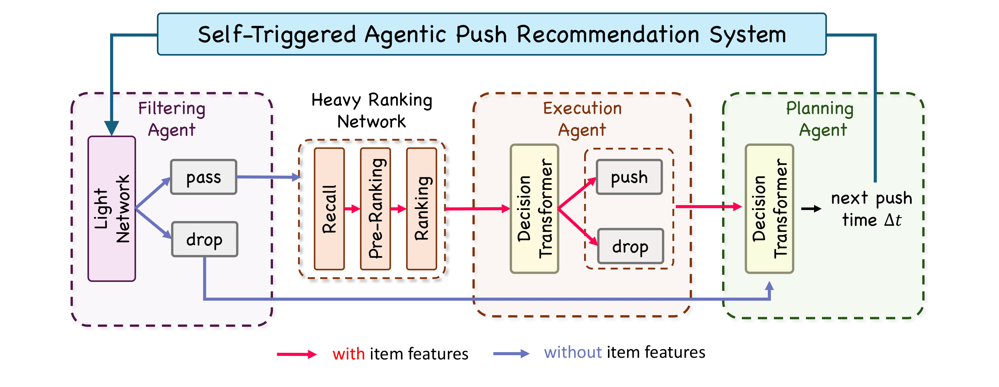
Figure 2 应从左向右、再沿红色回路阅读。过滤 agent 只使用轻量网络决定 pass/drop；通过后才进入带 item 特征的召回、预排序和排序，随后执行 agent 基于重链路结果作 push/drop 判断。无论当前是否发送，规划 agent 都在不依赖 item 特征的状态上产生下一次间隔 (Delta t)，把控制权交回未来时刻。蓝色箭头标出不含 item 特征的低成本路径，红色箭头标出昂贵的候选内容路径。这个结构解释了为什么论文可以同时讨论推荐价值与 QPS：如果低价值机会能在最左侧被剪掉，就无需让每一次时间判断都承担完整排序成本；如果规划时间由端到端 RTG 学得，系统也不必用高频轮询换取实时性。图中三个 agent 不是互相独立的“专家”，而是围绕同一条请求生命周期分工。
2.2 规划 Agent：Gated-RTG 与序数时间生成
规划问题的难点有两个。第一，(R_t) 是低维、高方差条件，而 (s_t) 是稠密高维状态；若直接拼接，网络很容易只利用强状态特征而忽略目标回报，导致输入不同目标却生成近似相同的时间。STEPS 将 RTG 先经 MLP 扩维，再以 Hadamard 乘法门控状态：
乘法的意义是让每个状态通道都显式受目标回报调制，网络无法像拼接结构那样轻易绕过条件。论文还在训练时从 (U(0,1)) 采样 (lambda_n)，让同一策略学习一族“正价值—负体验”权衡；推理时改变 (lambda_n) 即可调整风险偏好，而不需要重新训练。
第二，(\Delta t) 在 0 到 24 小时之间呈明显长尾，十分钟误差与十小时附近的半小时误差并不等价。论文不用单点回归，而将连续时间按样本等频切成 (K=100) 个有序桶，阈值为 ({\tau_k})。每个桶不是互斥类别，而是“真实间隔是否越过该边界”的累积判断；第 (k) 个标签与训练损失为
推理时对“超过每个阈值”的概率累加，按相邻阈值宽度加权恢复连续间隔。这样既保持序数监督的单调结构，又避免线上调度只能落在离散桶中心；对应解码为：
等频桶让高密度短间隔区域得到更细分辨率，也避免极少数长间隔样本主导普通回归损失。这个解码仍然连续，不会把生产调度限制成 100 个离散时刻；各阈值概率共同决定期望间隔，所以相邻状态的小幅变化能够平滑改变下一唤醒时间，而不会产生跨桶跳变。等频边界也使每个阈值拥有近似均衡的正负样本，缓解长尾末端监督不足。
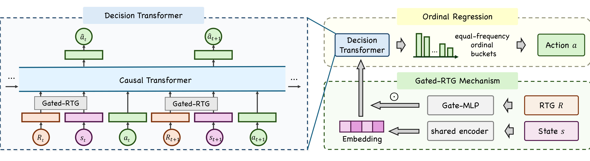
Figure 3 左半部分是跨时间步的 Decision Transformer：每个时间步把 (R_t,s_t,a_t) 组织成因果序列，RTG 与状态先经 Gated-RTG 融合，再由 Transformer 预测后续动作。右半部分放大单步时间生成：共享编码器得到状态，Gate-MLP 将 RTG 转为门控，Decision Transformer 输出按等频边界排列的序数 logits，最后解码为间隔动作。图的要点不是“使用了 Transformer”，而是条件注入和输出空间处理形成闭环：门控解决目标被高维状态淹没，序数回归解决长尾连续时间不适合普通回归。训练阶段还通过随机 (lambda_n) 拓宽条件覆盖；线上阶段固定业务可接受的 (lambda_n)，直接生成精确的下一次触发时间。
2.3 执行 Agent：Bellman RTG 与价值引导
执行 agent 面对的是二元动作，但离线日志里的历史动作未必最优。若把观测到的 (R_t) 直接当成某个动作的真实价值，模型只能模仿旧策略留下的选择偏差。STEPS 因此分别学习正向和负向 (Q) 值，并用 Bellman 目标重标。以用户活跃为例，若用户已自然活跃，后续正 RTG 为零；否则可写成
负回报同理，最后组合 (R_t=R_t^+-lambda_nR_t^-) 和 (Q=Q^+-lambda_nQ^-)。价值回归为
价值头不仅做评估，还反过来纠正策略。对日志动作 (a_t)，论文计算其相对反事实动作 (1-a_t) 的价值差：
动作损失用停止梯度后的 (w_t) 重加权：日志动作若相对价值更高，监督权重更大；若价值更低，就弱化模仿强度。最终联合目标为
论文没有把价值引导用于上游连续时间规划，理由是时间标签噪声大、单次规划与最终发送之间隔着多个阶段，critic 更易调参不稳或出现 reward hacking；价值引导只放在噪声较低的二元执行任务中。这是一个重要的工程取舍：同一套生成式 RL 思想不必机械复制到每个模块。
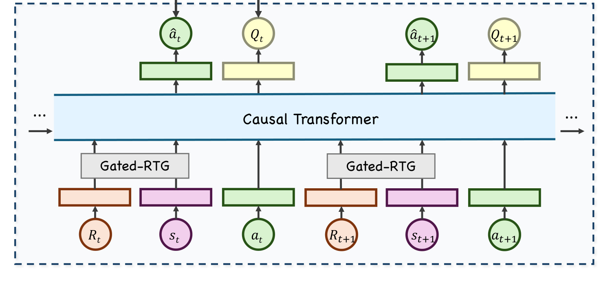
Figure 4 表明执行 agent 仍以 (R_t,s_t,a_t) 的因果序列为骨架，但每个时间步同时产生动作预测 (hat a_t) 和价值 (Q_t)。底部 Gated-RTG 保留了可在线调整 (lambda_n) 的条件能力，中间 Transformer 共享轨迹表征，上方策略头与价值头分别承担“生成动作”和“判断动作质量”。这种结构让 Bellman 重标与行为监督在同一序列上对齐：价值头用未来轨迹修正次优日志，策略头再依据相对动作价值调整模仿权重。图中没有候选物料排序细节，因为执行 agent 接收的是前序重排序后的上下文；线上真正的成本热点来自到达该模块之前必须运行的 item 链路，这也解释了过滤 agent 为什么必须更早出现。
2.4 生产落地：事件触发并流与轻量过滤护栏
纯自规划会漏掉突发机会，例如关注作者临时开播或好友刚发布视频。生产系统因此把 planning agent 生成的时间与实时业务事件合流，二者都可发起一次执行判断。与此同时，自触发策略取消了固定预算窗口，异常短间隔可能让系统在百万级 QPS 上形成调用风暴。论文设置两层硬边界：成功推送后的固定分钟窗口内不再激活下游；用户自然回到平台后的固定分钟窗口内也不再激活。它们不是主策略，只负责截断极端行为。
更一般的请求由三层 MLP 过滤。该 MLP 从重执行 agent 蒸馏，只读取用户与环境特征，刻意不读取 item 特征；一旦读取 item，就必须先完成召回和多级排序，过滤已失去节省资源的意义。论文称完整 item 链路约为轻量特征路径的十倍成本。训练与推理的边界由此很清楚：重 agent 在历史轨迹和候选内容上学价值，轻 agent 学一个可前置的近似守门函数；线上先做硬安全窗口，再做轻模型剪流，只有少数机会进入昂贵执行。
3. 实验结果
3.1 六个月日志与十四天线上 A/B
离线训练与评估使用超过六个月的抖音生产日志，覆盖超过十亿用户；线上实验按用户设备完全随机分桶，持续 14 天。预规划频控是当时生产基线，固定间隔方案使用工业 Decision Transformer 并将轮询频率调到尽量接近基线资源。三项指标都报告相对基线变化：UAD 越高越好；NE 以撤销推送权限的用户数衡量，越低越好；Resource 为总体计算成本，越低越好。
STEPS 的 UAD 提升 0.2843%，NE 降低 1.9089%，资源下降 79.42%。固定间隔方案在相近预算下 UAD 反而下降 0.0670%，NE 上升 0.0205%，资源还增加 6.548%。这支持“高频轮询并不自动等于更好的实时决策”，也说明最终效果不能只归功于引入 Decision Transformer。需要注意，79.42% 主要由轻量过滤 agent 提供，而不是自触发时间生成本身；论文随后用消融对此做了拆分。
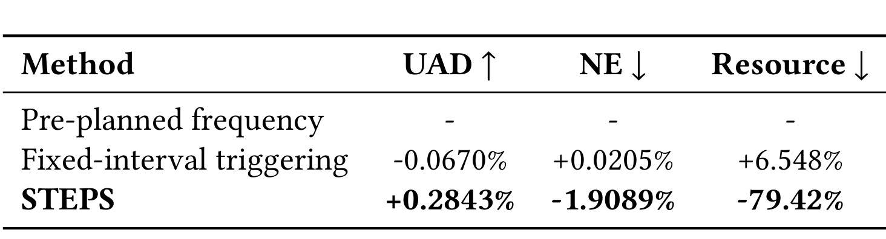
Table 1 的比较口径是相对变化，不能读成绝对百分点。最值得看的是三列方向一致：STEPS 既提高活跃，又降低严重负体验代理，还显著省资源；固定间隔则三项都没有超过预规划基线。这组结果把“价值—安全—成本”从单一优化改成联合检验，避免只报 UAD 而掩盖通知疲劳。不过表中没有置信区间、p 值、绝对撤权率和每用户计算量，也没有给出实验组流量比例，因此 0.2843% 是否在其他产品上具备同等业务量级无法判断。它能证明的是：在该平台与这套线上配置下，自触发闭环通过了生产 A/B，而不是一种普遍的效应大小。还应注意固定间隔方案的资源增加为 6.548%，它说明作者并非拿一个极省成本但效果差的弱基线作比较；即使将轮询预算调到接近生产基线，周期触发仍同时承受无效调用和粗粒度时机两类损失。
3.2 三个 Agent 的消融与因果归因
模块消融显示，规划 agent 单独贡献 UAD +0.1808%、NE -0.9781%、资源 -4.54%，是业务收益的主要来源；执行 agent 进一步贡献 UAD +0.1035% 与 NE -0.6843%，但没有单列资源下降；过滤 agent 对 UAD 记为“-”，贡献 NE -0.2465% 和资源 -74.88%。三项 UAD 贡献近似加到主结果，但这并不等于严格因果可加，因为多模块同时上线可能存在交互，论文也未报告所有组合消融。
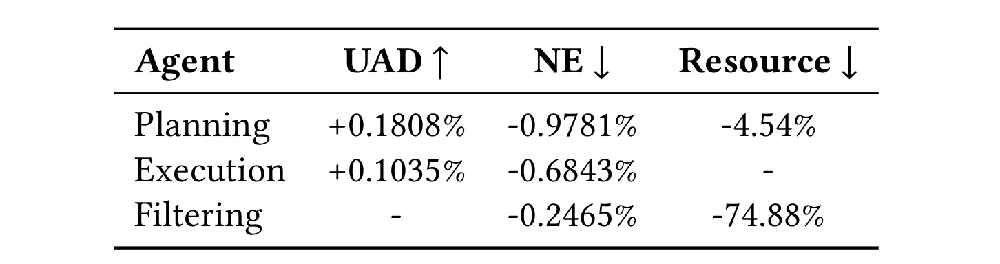
Table 2 对理解系统边界尤其重要。若只看摘要中的 79.42%，容易认为“模型学会下一次何时调用”天然消除了绝大多数计算；表中规划 agent 实际只给出 4.54% 的资源下降，真正的数量级节省来自过滤 agent 在重排序前丢弃请求。相反，规划 agent 对 UAD 与 NE 的贡献最大，说明时间生成更像价值与用户体验模块，过滤更像成本与安全模块，执行则在候选内容已准备好后补充精细判断。这个分工也给复现提出要求：只实现规划模型而没有前置过滤，不应宣称复现了论文的成本收益；只做过滤，又无法覆盖时机和长期价值贡献。表中执行模块的 Resource 为空而非零，意味着论文没有隔离报告其成本变化，不能据此推断执行 agent 免费；相反，后文每千请求成本表明确显示它是最昂贵环节。阅读消融时必须区分“指标未报告”和“没有影响”。
3.3 规划机制：条件不被忽略且桶配置稳定
论文定义 correlation ratio：对同一批状态，分别输入低 RTG (r_{mathrm{low}}=0) 和高 RTG (r_{mathrm{high}}=1)，比较预测间隔期望之比。比值接近 1 表示模型忽略条件。普通拼接式 DT 在训练中围绕 1 波动，Gated-RTG 则稳定上升并收敛到约 1.8，与训练数据经验比例接近。桶配置方面，等频切分在各个 (K) 上优于等宽；(Kin[50,500]) 较稳定，(K=100) 的 Regression AUC 为 0.75116，最终部署该配置。
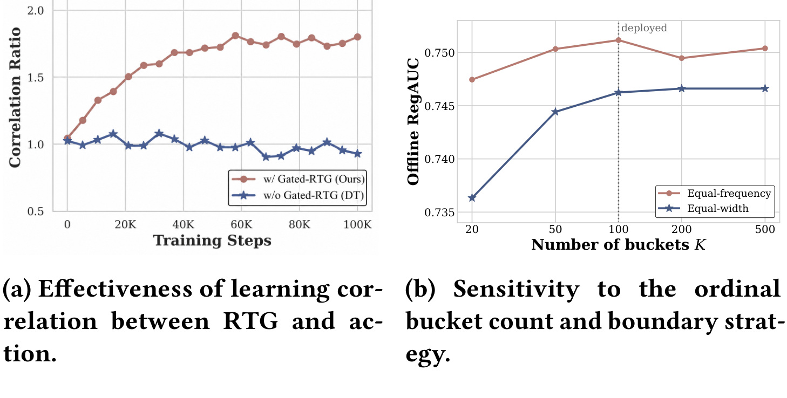
Figure 5a 的红线说明乘法门控确实让目标回报改变输出，而蓝线围绕 1 则揭示普通 DT 的 condition-ignoring。这个实验比单看最终 AUC 更贴近方法主张：如果 RTG 无法影响间隔，那么所谓在线调节 (lambda_n) 就没有实际控制力。Figure 5b 显示等频桶在 100 附近达到峰值，过少桶损失短时分辨率，过多桶又让每个阈值监督稀疏；部署点不是追求最大桶数。遗憾的是，图中只给 Regression AUC，没有进一步展示不同 (lambda_n) 对 UAD/NE 的线上响应曲线，因此“可调业务权衡”仍主要由机制设计而非完整线上剂量—反应证据支持。
规划生成的时刻还要通过过滤与执行。Table 3 报告应用规划 agent 后过滤阶段通过率提升 12.3%，执行阶段通过率提升 2.3%。论文解释，RTG 从规划一直收集到最终用户响应；被下游阻断的请求得到零 RTG，因此规划自然倾向生成更可能存活到最终发送的时刻。间隔分布也发生结构变化：0–20 分钟的极短相邻推送下降 35.93%，3–6 小时区间上升 179.84%；第 5、25、50 分位间隔分别增长 13.1%、20.1%、25.6%。
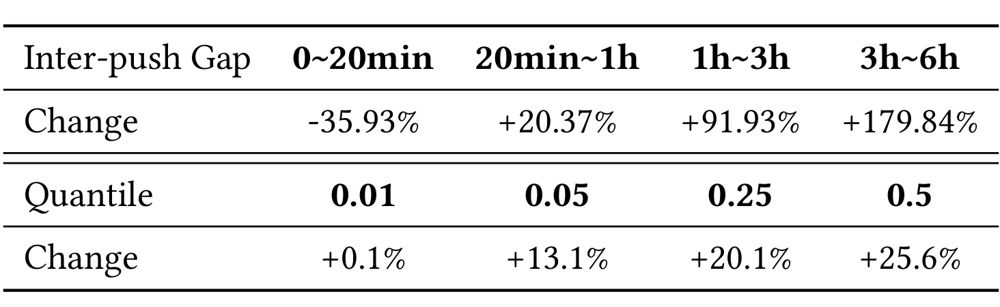
Table 4 让 NE 的改善具备了更具体的行为解释。极短间隔占比下降，意味着策略不是靠频繁试探制造更多机会；3–6 小时区间明显增加，则表明规划在用户价值较低时愿意把下一次判断推迟。分位点几乎整体右移，说明变化不是只由极少数异常用户驱动。另一方面，表中是相对变化而非绝对间隔分布，无法得知原始 0–20 分钟推送占比是否很小；3–6 小时增长 179.84% 也可能建立在低基数上。更完整的复现应同时报告绝对分布、按用户活跃层分桶的间隔，以及每个分位变化对 UAD/NE 的边际贡献。第 1 分位只增长 0.1%，而第 5 至 50 分位明显右移，也提示硬安全窗口可能已经钳住最极端的短间隔；学习到的规划策略主要重塑中部人群，而不是替代分钟级硬护栏。
3.4 执行机制：实时轨迹与长期价值
执行 agent 的日内分析区分“当前未活跃但历史高活跃”和“当前未活跃且历史低活跃”用户。前者的通过率增量随时间上升并在晚间保持正值：一个通常活跃的用户到晚间仍未出现，推送的增量价值更高。后者在晚间跌到负值：剩余未激活人群越来越像本来就低参与的用户，继续发送价值有限。长期实验中，直接拟合观测 RTG 的方案早期上升后逐步回落到接近零；Bellman RTG 则持续上升并稳定高于基线。
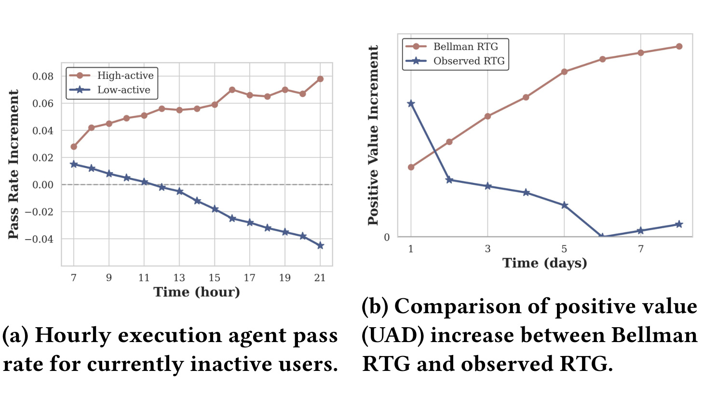
Figure 6a 展示执行 agent 不是用统一“晚间阈值”，而是结合历史活跃层区分同一时刻的剩余价值：两条线方向相反，说明轨迹状态对动作有实质影响。Figure 6b 则把 Bellman 重标的意义放到多日线上轨迹中。观测 RTG 继承历史策略的次优动作，早期收益可能来自容易学习的相关性，随后无法维持；Bellman 目标用动作价值的最大项进行轨迹拼接，曲线持续增长。两种方案都使用 Gated-RTG，因此作者将差异主要归因于回报建模。但图仍缺误差带和重复实验，且“主要归因”不是完全隔离所有实现差异后的严格因果结论。
用户级发送分布进一步显示，零发送用户占比下降 4.06%，每天 1–20 次的适中发送用户上升 20.31%，21–30 次和超过 30 次的频繁/极端发送用户分别下降 6.87% 与 9.30%。这不是简单全局减频：系统把两端同时向中间移动，既减少完全没有触达，也减少过度发送。
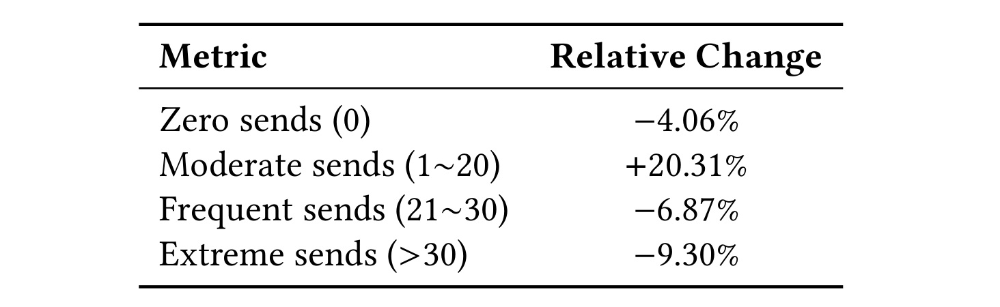
Table 5 的价值在于补充平均 UAD 和撤权率看不到的异质性。如果策略只是统一提高门槛，零发送用户应增加；如果只是扩大发送，极端桶应增加。实际是零发送与极端发送同时减少、适中桶明显增加，符合价值引导策略对不同状态作差异化决策的预期。但“1–20 次/日”是很宽的业务桶，二十次通知对很多产品仍可能过高；论文也没有提供每类用户的 UAD、NE 与内容质量。因此，这张表能说明分布重整，却不能单独证明每个用户都获得了更好的主观体验。
论文还检查 Q 值准确性。预测 (Q^+) 与真实 RTG 的比值在全天稳定于 1.0–1.1，表明整体校准尚可。对未激活用户，(Q^+(s,a=1)-Q^+(s,a=0)) 随时间单调下降，符合“越晚仍未活跃的人群越来越低参与”的群体组成变化。
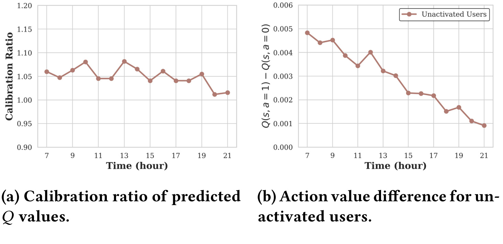
Figure 7a 中校准比例大多围绕 1.05，未出现随小时大幅漂移，这为线上按价值差重加权动作提供了基本可信度。Figure 7b 的动作边际价值从早到晚持续降低，与 Figure 6 的低活跃人群趋势互相印证：模型不是只拟合某个固定时段，而是学到剩余人群构成随时间变化。需要警惕的是，整体校准比并不能排除局部严重失准，尤其是罕见用户、冷启动用户和高通知敏感人群；相对动作价值的单调性也可能部分来自时间特征本身。更严格的分析应报告分层可靠性图、反事实 uplift 估计和策略外评估。图中校准比高于 1 表示预测值整体略高于真实回报，却没有看到相应的校准后处理；如果该偏差随流量分布漂移扩大，优势权重会系统性放大发送动作，因此线上还应监控价值差而不只监控最终 UAD。
3.5 过滤机制：把昂贵调用留给高价值时刻
计算开销按过滤 agent 归一化后，规划 agent 总体与每千请求成本都是 1.27，执行 agent 总体为 9.62、每千请求高达 57.72。总体与单请求倍数不同，是因为到达各模块的请求量不同。执行端必须进行候选 item 召回与多级排序，单次调用远贵于只看用户/环境特征的三层 MLP；前置过滤即使牺牲少量模型精度，也能避免让注定被拒绝的机会进入重链路。
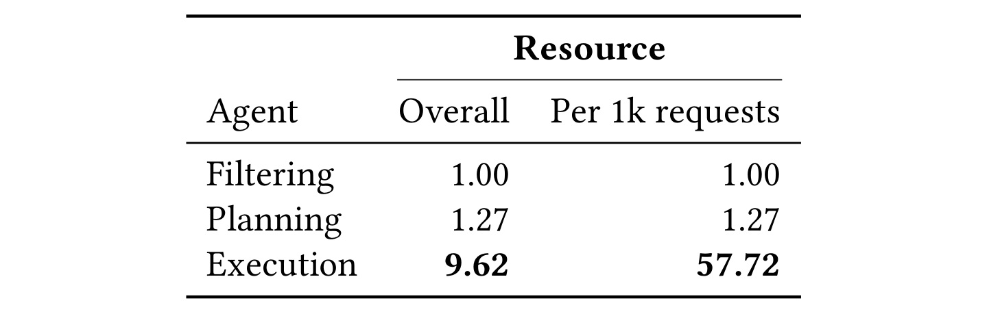
Table 6 给出了过滤模块的经济学：其价值不在单次预测更准，而在便宜且位于昂贵路径之前。执行 agent 每千请求成本是过滤的 57.72 倍，即使过滤误放过少量低价值请求，也可能比把全部请求交给执行更划算；反过来，过滤误杀高价值机会会直接损失 UAD，因此阈值必须与线上价值共同调节。总体执行成本只有 9.62 倍而非 57.72 倍，侧面说明前序已经显著改变调用量。该表未公开绝对 CPU/GPU 时长、内存、峰值延迟和模型批处理策略，跨平台容量规划仍需重新测量，不能把归一化比例直接当硬件预算。
阈值敏感性用平均触发间隔衡量过滤强度。间隔从 0 增至 20 分钟时，QPS 节省持续增加而 UAD 只小幅波动；增至 60 分钟时 UAD 急剧下降，因此生产选择分钟级保守阈值，而非小时级规则。
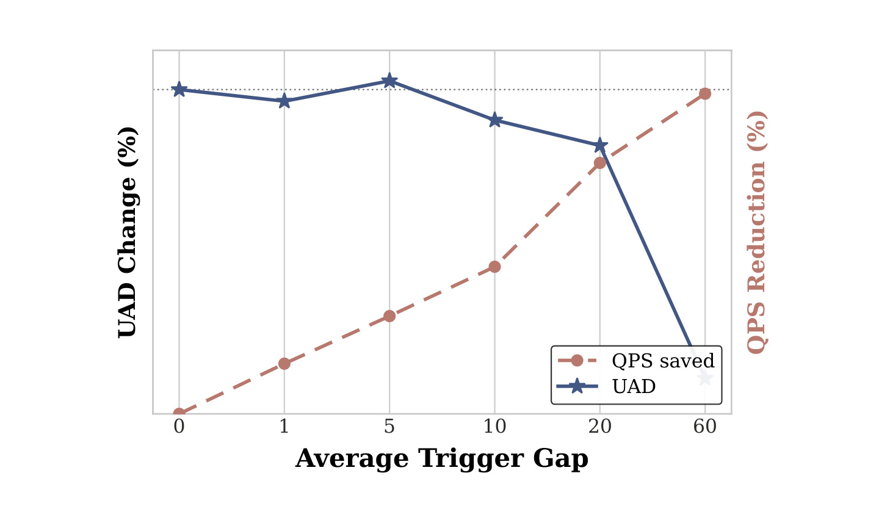
Figure 8 用双纵轴同时画出 UAD 与 QPS reduction，显示 20 分钟附近出现明显价值—效率拐点：红色 QPS 节省仍在增长，蓝色 UAD 尚未崩落；到 60 分钟，继续省请求的边际收益伴随显著价值损失。它说明过滤阈值不是越高越好，也不能只用离线 AUC 决定。图中纵轴没有公开数值刻度的完整业务量级，且不同时间点是否来自同一实验周期未详细说明，所以应把曲线用于确定调参方向，而不是复制具体 20 分钟。其他产品需根据内容时效、通知上限和用户回访周期重新寻找拐点。
按活跃层分析，价值过滤相对无过滤在 Inactive、High-Active、Fully-Active 用户上分别剪掉 78.86%、66.63%、85.65% 请求。相对随机过滤，为保持相同最终发送量，价值模型在三类用户上还能额外剪掉 5.60%、5.13%、63.70%。全活跃用户拥有大量好友动态、开播等业务事件，机会多但大多冗余；非活跃用户响应价值低，也适合早期剪流。
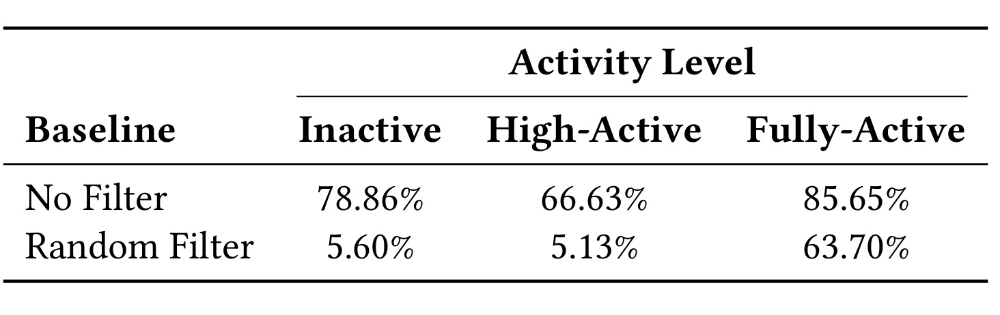
Table 7 证明节省不只是固定比例抽样。若过滤只是随机压低流量，在相同最终发送量下不应对全活跃用户额外剪掉 63.70% 的请求；价值模型识别出“机会很多但新增价值低”的冗余事件，并在昂贵排序前丢弃。对非活跃用户，相对无过滤的 78.86% 很高，但相对随机过滤只多 5.60%，说明大部分节省可能来自总体预算，价值选择性的额外空间较小。该结果也暴露公平性风险：长期低活跃用户若持续被过滤，可能进入更少触达、更少反馈的闭环，模型对其兴趣恢复机会进一步变差。线上系统需要为回流探索、重要事务通知和新用户设置独立护栏。高活跃组相对随机过滤只多剪 5.13%，而全活跃组多剪 63.70%，说明“高活跃”和“已经完成当日活跃”不是同一状态；后者新增触达价值骤降，是轻模型最容易提前识别的冗余流量。
4. 总结
4.1 贡献与可迁移启发
STEPS 的核心贡献，是把推荐系统的“何时启动一次昂贵决策”纳入策略空间，而不只优化启动后的召回与排序。规划 agent 用 Gated-RTG 和序数回归生成连续间隔，执行 agent 用 Bellman RTG 与相对动作价值纠正次优日志，过滤 agent 用蒸馏后的轻模型和硬边界守住成本与安全。线上结果将三个目标放在同一张证据链上：UAD +0.2843%、NE -1.9089%、资源 -79.42%，并通过模块消融说明业务收益主要来自规划/执行，成本收益主要来自过滤。
对推荐工程，更可迁移的不是具体模型名，而是分层决策原则：让低成本用户状态模型决定“是否值得运行重模型”，让重模型只处理通过门槛的候选；把下一次评估时刻作为可学习动作，可用于召回刷新、广告重估、消息触达、价格通知和 agent 工具轮询。对大模型 agent，STEPS 也提供了一个有用类比：工具调用不必固定频率发生，agent 可以联合学习“现在是否调用”和“何时再检查”，同时用轻量守门器限制昂贵模型或外部 API 的调用。
4.2 局限与风险
- 复现透明度有限。 论文未提供公开代码、超参数全集、特征定义和生产日志，外部团队很难还原十亿用户规模的训练与服务链路。
- 线上统计口径不完整。 主表只有相对变化，没有绝对基线、置信区间、显著性检验、实验流量比例和长期停留效应；十四天不足以覆盖通知疲劳的更长周期。
- 用户利益代理偏窄。 撤销通知权限只能捕捉严重负体验，静默忽略、注意力打断、内容敏感性和操作系统级关闭都未被完整测量。
- 离线策略偏差仍未消失。 Bellman 重标改善次优日志，但 (Q) 仍从历史策略覆盖的数据学习；未见充分支持的状态—动作区域可能产生外推误差或 reward hacking。
- 多 agent 归因不彻底。 表 2 给出单模块贡献，却没有完整组合消融和交互项；共享底层表示、事件并流与硬边界也可能影响最终指标。
- 跨平台迁移不确定。 抖音的内容供给、活跃节律、通知权限和百万级 QPS 不等同于电商、新闻、企业协作或海外系统，K=100 与分钟级阈值不能直接复用。
- 低活跃人群存在反馈闭环风险。 过滤器大量剪掉非活跃用户请求，若缺乏探索与回流机制，可能让稀疏用户获得更少观测，从而进一步被判断为低价值。
4.3 后续跟进
- 核验后续是否公开代码、特征字典、线上实验补充和 RecSys 2026 最终版本，重点比较 arXiv v1 与会议版的统计披露。
- 在可控数据上复现 Gated-RTG 与普通拼接的 condition-ignoring 诊断，并加入按用户层分组的校准误差，而不只复现总体 AUC。
- 做规划、执行、过滤、硬边界和事件并流的全组合消融，报告绝对 QPS、P95/P99 延迟、峰值容量和每用户通知分布。
- 将 NE 扩展为撤权率、忽略率、系统通知设置、投诉/屏蔽和长期留存的多目标约束，并检查 (lambda_n) 调节是否形成稳定单调的线上响应。
- 为低活跃、冷启动和高敏感人群加入受控探索配额，检验价值过滤是否放大历史参与度差异。
总体而言，STEPS 最值得保留的判断是：在大规模主动推荐中，调度本身就是推荐动作，资源消耗也应进入策略闭环。 论文给出了罕见的全部署证据，但绝对效果、用户福利与外部可复现性仍需更多公开材料约束。